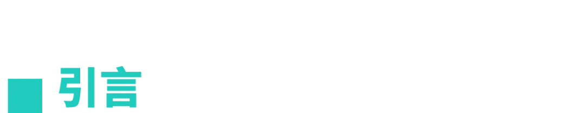
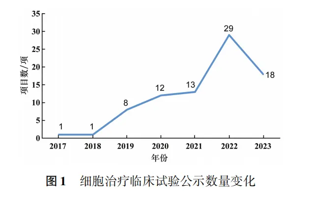
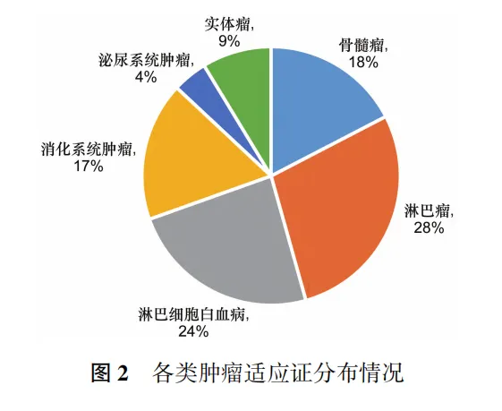
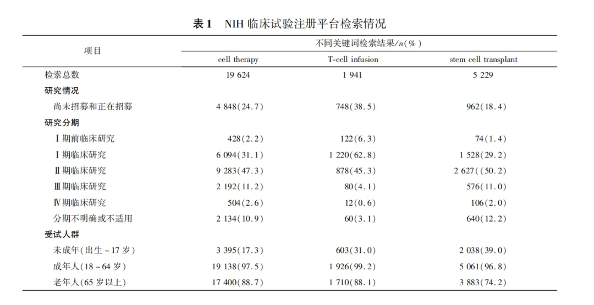

年后肝"负重"？百年春护肝美颜能量抗衰老针——给肝"松绑"，让脸发光！
2026-03-01

About Us
关于百年春

昨天，我们将国内的细胞治疗情况与日本简单做了一些对比，今天，我们把眼光再放到国际上，看看我们与国际水平的差距到底有多少？
你知道，到目前为止，我国有多少项细胞治疗项目吗？适应症又有多少，我们与国际研究水平的差距在哪？今天，我们一起来探讨一下。
细胞治疗产品定义
说实话，目前为止，细胞治疗产品的定义还是比较繁杂的。因此，在今天这篇文章，我们先来界定一下文章讨论的细胞治疗产品的范围，避免误解。
这些产品是用于治疗人类疾病、遵循伦理准则、并按照药品管理法规进行研发和注册的活性人体细胞制品。
细胞治疗产品可依据其来源划分为自体和异体细胞制剂，按细胞类型则有干细胞、免疫细胞和体细胞制剂等不同类别，而经过基因工程技术改造的细胞制剂则被特别称为基因修饰细胞制剂。
研究现状
在很长一段时间内，国内细胞治疗临床试验都是由研究者发起的临床研究在“中国临床试验注册中心”进行注册，并受到国家卫生健康委员会的严格监管，这个阶段，医疗机构是研究风险的主要承担者。
近800个研究项目
而随着细胞治疗产品通过药品注册途径进入市场，对临床试验的要求日益严格，风险承担也由医疗机构扩展至申办者和医疗机构共同承担。

我们以“细胞治疗”为关键词，在“中国临床试验注册中心（www.chictr.org.cn)”进行检索，共检索到434项研究，其中有效注册研究385项，涉及未成年人的临床研究仅有12项，占比3.1%。进一步以“CAR-T”为关键词进行筛选，共得到143项研究，占比37.1%。
为了全面了解细胞治疗临床试验的开展情况，再以“细胞注射液”、“细胞自体回输”、“自体”为关键词进行了检索。
截至2023年7月25日，在“药物临床试验登记与信息公示平台(chinadrugtrials.org.cn)”上检索到的数据则增加到746和36项记录。经过筛选，最终确认82项细胞治疗临床试验，公示时间跨度为2017至2023年。
到2023年底，将有30项新的细胞治疗临床试验公示，与去年相比有所增长。在这82项试验中，只有3项为Ⅲ期临床试验，其余均为I期或Ⅱ期临床试验。受试人群分析显示，包含未成年人的试验有11项，占比13%。
超70个适应证

细胞治疗的适应症分析显示，在82项细胞治疗临床试验中，有48项适应症为肿瘤类，主要包括淋巴瘤、骨髓瘤和淋巴细胞白血病；34项为非肿瘤适应证，涵盖膝关节炎、半月板损伤、狼疮性肾炎、地中海贫血、肺纤维化、缺血性脑卒中、严重心力衰竭等。
细胞来源分析表明，51项试验使用自体细胞，31项使用异体细胞。
细胞类型分析显示，干细胞31项、体细胞4项、免疫细胞47项，其中干细胞和体细胞临床试验适应症多为非肿瘤（占97.1%）。
综合分析，2018至2022年间，以注册为目的的细胞治疗临床试验数量年均增长率高达220.3%，国内细胞治疗临床试验蓬勃发展的态势初现。
国际细胞治疗临床试验现状

在审视细胞治疗的当前进展时，不难发现，即使把眼光放在国际水平，其整体框架仍镶嵌于萌芽初绽的阶段之中。
已登记在册的探索主要聚焦于Ⅱ期临床测试及其之前的阶段，而步入Ⅲ期与Ⅳ期临床的试验则显得稀疏。
进一步剖析试验参与者的轮廓，我们看到成年人、老年人以及针对未成年人的研究展现出较大的水平差距，分别占据了17.3%、31.0%及39.0%的比例，预示着未来更广泛的适用性探索。
因此，不难看出，国际细胞治疗临床试验发展也仍处于相对初级阶段。
值得一提的是，细胞治疗研究的版图由多国共同绘制，其中美国以8035项研究高居榜首，中国紧随其后，贡献3264项，法国、德国、印度、英国、澳大利亚与日本等亦不甘落后。
我国的研究工作开展较晚，但近年来在科研实力上取得了显著进步，取得了多项重要成果，在干细胞领域的专利申请量也位居全球前列，所以，如今干细胞水平真正的差距并不大。
而对于需要接受干细胞治疗的患者来说，现在不一定需要出国接受治疗。在国内选择一家正规、专业的医疗机构进行干细胞治疗同样可以获得良好的治疗效果和体验。